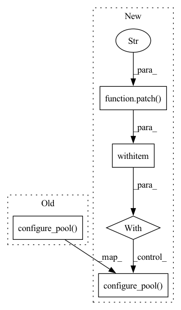

Pattern ID :30822
Before Change
n_pool = 2
pool = MagicMock()
pool._processes = n_pool
Model.configure_pool( model, pool=pool, n_pool=1)
assert model.pool is pool
assert model.n_pool == n_pool
After Change
Test configuring the pool when pool is specified
n_pool = 2
pool = MagicMock()
with patch("nessai.model.get_n_pool", return_value=n_pool) as mock:
Model.configure_pool( model, pool=pool, n_pool=1)
mock.assert_called_once_with(pool)
assert model.pool is pool
assert model.n_pool == n_pool
In pattern: SUPERPATTERN
Frequency: 4
Non-data size: 5
Instances Fragment ID: 90786712
Project Name: mj-will/nessai
Commit Name: cb365e47a385ede941c2b32ae94ac3378bd245f8
Time: 2022-05-20
Author: m.williams.4@research.gla.ac.uk
File Name: tests/test_model.py
M Class Name: AnonimousClass
N Class Name: AnonimousClass
M Method Name: test_configure_pool_with_pool(1)
N Method Name: test_configure_pool_with_pool(1)
M Parent Class:
N Parent Class:
M File Name: tests/test_model.py
N File Name: tests/test_model.py
M Start Line: 686
M End Line: 689
N Start Line: 687
N End Line: 690
Before Change
n_pool = 1
pool = MagicMock()
with patch("multiprocessing.Pool", return_value=pool) as mock_pool:
Model.configure_pool( model, n_pool=n_pool)
assert model.pool is pool
mock_pool.assert_called_once_with(
processes=n_pool,
initializer=initialise_pool_variables,After Change
Test configuring the pool when n_pool is specified
n_pool = 1
pool = MagicMock()
with patch("multiprocessing.Pool", return_value=pool) as mock_pool, patch(
"nessai.utils.multiprocessing.check_multiprocessing_start_method"
) as mock_check:
Model.configure_pool( model, n_pool=n_pool)
assert model.pool is pool
mock_check.assert_called_once()
mock_pool.assert_called_once_with( Fragment ID: 90786709
Project Name: mj-will/nessai
Commit Name: 4453f0a214966c0a42f8f7d7f69134791245a9f4
Time: 2022-10-31
Author: m.williams.4@research.gla.ac.uk
File Name: tests/test_model.py
M Class Name: AnonimousClass
N Class Name: AnonimousClass
M Method Name: test_configure_pool_n_pool(1)
N Method Name: test_configure_pool_n_pool(1)
M Parent Class:
N Parent Class:
M File Name: tests/test_model.py
N File Name: tests/test_model.py
M Start Line: 853
M End Line: 853
N Start Line: 852
N End Line: 858
Before Change
Integration test for evaluating the likelihood with n_pool
// Cannot pickle lambda functions
integration_model.fn = lambda x: x
integration_model.configure_pool(n_pool=1)
assert integration_model.n_pool == 1
x = integration_model.new_point(10)
out = integration_model.batch_evaluate_log_likelihood(x)
After Change
Integration test for evaluating the likelihood with n_pool
// Cannot pickle lambda functions
integration_model.fn = lambda x: x
with patch("multiprocessing.Pool", mp_context.Pool):
integration_model.configure_pool(n_pool=1)
assert integration_model.n_pool == 1
x = integration_model.new_point(10)
out = integration_model.batch_evaluate_log_likelihood(x)
Fragment ID: 90786711
Project Name: mj-will/nessai
Commit Name: cb03c90399ab2b61d7133c213941649bb6a8cb2c
Time: 2022-06-28
Author: michaeljw1@googlemail.com
File Name: tests/test_model.py
M Class Name: AnonimousClass
N Class Name: AnonimousClass
M Method Name: test_n_pool(2)
N Method Name: test_n_pool(1)
M Parent Class:
N Parent Class:
M File Name: tests/test_model.py
N File Name: tests/test_model.py
M Start Line: 1042
M End Line: 1042
N Start Line: 1037
N End Line: 1043
Before Change
// Cannot pickle lambda functions
integration_model.fn = lambda x: x
with patch("multiprocessing.Pool", mp_context.Pool):
integration_model.configure_pool(n_pool=1)
assert integration_model.n_pool == 1
x = integration_model.new_point(10)
out = integration_model.batch_evaluate_log_likelihood(x)
After Change
Integration test for evaluating the likelihood with n_pool
// Cannot pickle lambda functions
integration_model.fn = lambda x: x
with patch("multiprocessing.Pool", mp_context.Pool), patch(
"nessai.utils.multiprocessing.multiprocessing.get_start_method",
mp_context.get_start_method,
):
integration_model.configure_pool(n_pool=1)
assert integration_model.n_pool == 1
x = integration_model.new_point(10)
out = integration_model.batch_evaluate_log_likelihood(x)
Fragment ID: 90786710
Project Name: mj-will/nessai
Commit Name: 2a8610683cad811149d95ff24eff814d170ea23c
Time: 2022-10-31
Author: m.williams.4@research.gla.ac.uk
File Name: tests/test_model.py
M Class Name: AnonimousClass
N Class Name: AnonimousClass
M Method Name: test_n_pool(2)
N Method Name: test_n_pool(2)
M Parent Class:
N Parent Class:
M File Name: tests/test_model.py
N File Name: tests/test_model.py
M Start Line: 1113
M End Line: 1113
N Start Line: 1112
N End Line: 1116